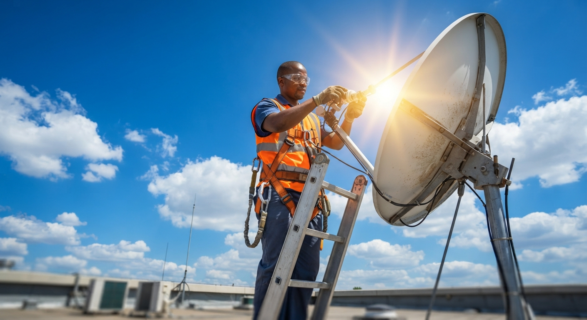
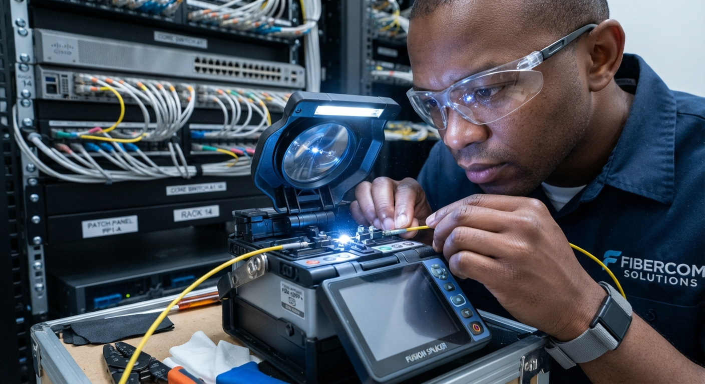
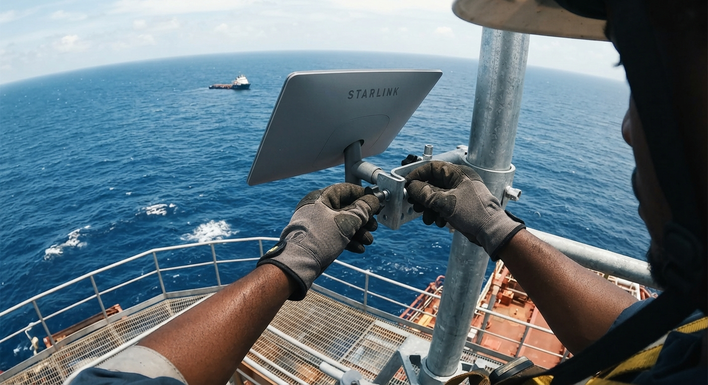
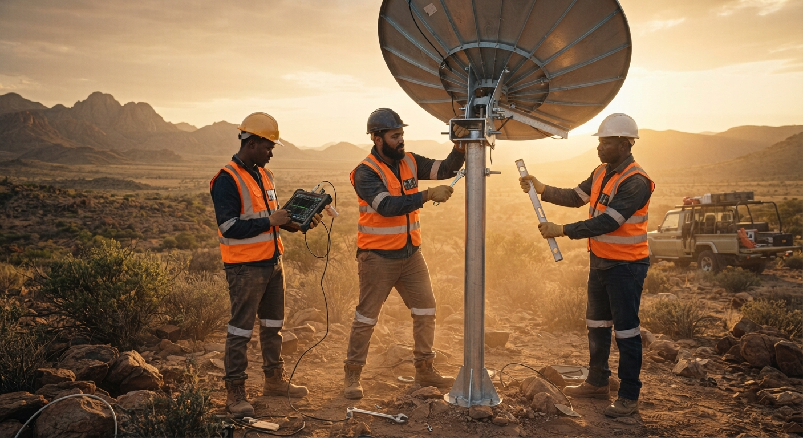
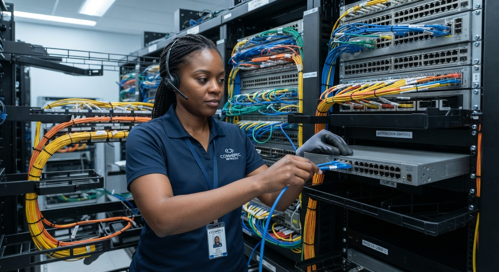

01 / Connectivity
VSAT installation & support
Supply, mounting, alignment, commissioning, testing and maintenance of VSAT terminals for dependable voice and data connectivity.
Our services
From a single VSAT installation to a complete offshore communications package, we plan and deliver dependable systems for real operating conditions.
What we deliver
Integrated technical services for offices, remote sites, vessels, rigs and industrial facilities.

Supply, mounting, alignment, commissioning, testing and maintenance of VSAT terminals for dependable voice and data connectivity.

Fibre planning, structured cabling, splicing, termination, testing and fault support for high-speed site and campus networks.

Professional Starlink deployment for offices, remote locations, vessels and offshore assets, including outdoor mounting and network integration.

Outdoor and marine-ready telecoms support for rigs, vessels and shore bases, delivered with disciplined planning and site safety.

Installation, configuration and support for control panels, switching systems and operational communications infrastructure.
Intercom, public address, loudspeaker and beacon solutions that make critical communication clear across demanding sites.

Supply of laptops, desktops, monitors, peripherals, networking equipment and accessories selected for your people and workload.

Structured network design, server room installation, configuration, documentation and practical technical support.